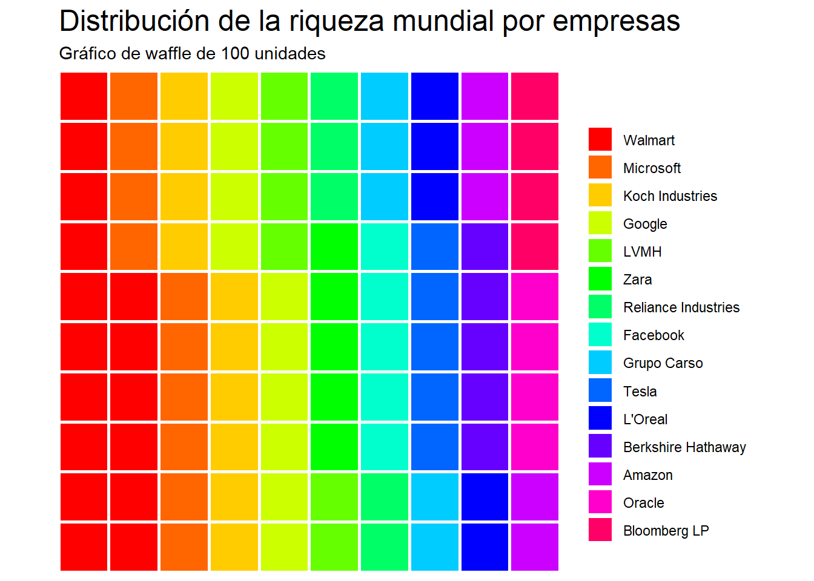

# Instalar y cargar los paquetes
library(waffle)Warning: package 'waffle' was built under R version 4.3.3Loading required package: ggplot2# Datos
dataset <- read.csv("datasets\\Top_1000_wealthiest_people_d4.csv")
#Se convierten los datos a un vector nombrado
valores <- (setNames(dataset$Net.Worth..in.billions., dataset$Company))
# Crear el gráfico de waffle
waffle_chart <- waffle(valores, rows = 10, size =1,
colors = rainbow(length(valores))) +
labs(title = "Distribución de la riqueza mundial por empresas", subtitle = "Gráfico de waffle de 100 unidades")
# Mostrar el gráfico
waffle_chart